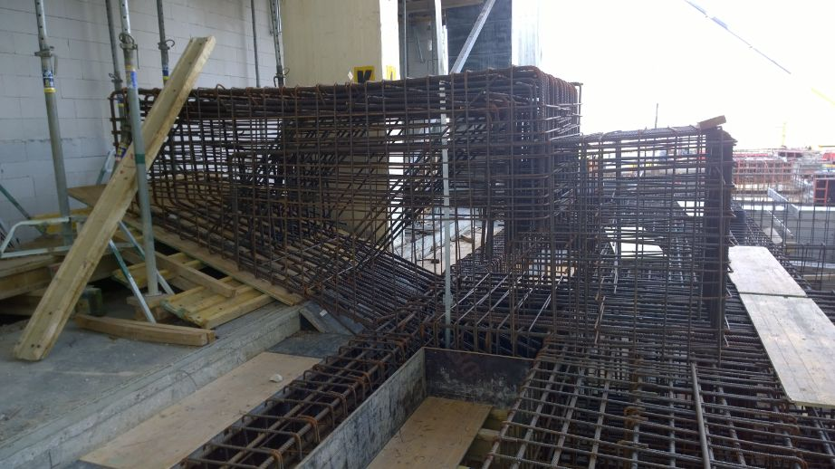
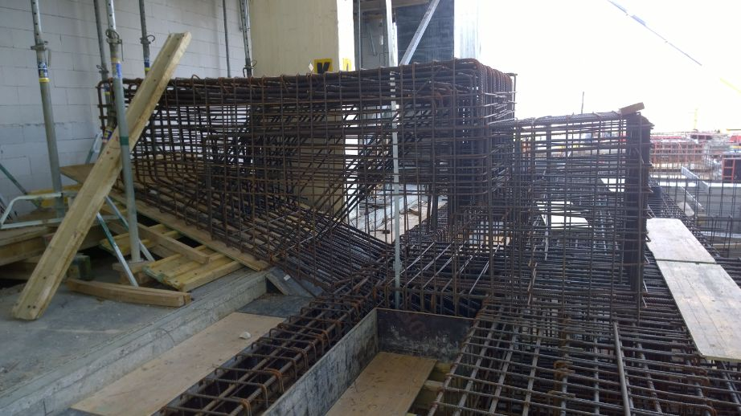

About me
My name is Bálint Tóth and I'm a freshly graduated structural engineer. My paper may be fresh, but I was always motivated to get the most out of my time so I started working as soon as I had the chance. First two uni years went by with various student jobs but from the third I gradually started to work in my learned profession, of course in addition to my studies. Thanks to this I had the chance to gather knowledge about on-site works, BIM management systems and also get some design experience early on. I did need the information because I've had a hard time figuring out which direction I should go. This took a U turn in 2019 and here it goes the story to the next section...
So in the year mentioned above I stumbled upon Grasshopper as a side note of a training and looked it up later that day. It opened a whole new aspect before me in construction as I've got deeper in the rabbit hole. I started learning how parametric modelling works and looked up various examples how it can be implemented in the construction industry. The 2016 Autodesk Universtiy presentation 'Taking BIM for Structural Engineering to the Limits—and Beyond' was the point where the target got clear. These events turned my interest towards programming and computation. At this point there were only a few subjects left from my formel education, so I managed to get some free time to learn some of the basic concepts of these topics.
In short: I think in todays world combined skillsets from different professions is a strong key to success both in personal as well as in a companies life. According to that as now a lot of my time and resources ar freed up, my plans are to broaden my knowledge about programming and deepen my understanding about computational design. The best way in my opinion to achive these is by doing. So first of all I'm looking for a role where these abilities and my former experience from construction can form a new comprehensive relationship.
Major Skills
-
Grasshopper
-
Tekla
-
AxisVM
-
BIM360 Docs
-
Autocad
-
Python
- Revit
- Revit - Dynamo
- Allplan
- Navisworks
- Matlab
- IDEA StatiCa
- HTML
- CSS
- JavaScript
Studies
Budapest University of Technology and Economics
2013-2020
Civil engineering
I've had the pleasure to study at the Budapest University of Technology and Economics from 2013.
In 2020 I've finished my Bachelors diploma in structural engineering.
The time I've spent here was somewhat more than prescribed, but I can assure you, no minute was wasted.
Throughout university years I constantly undertook various physical and mental odd jobs, jumped into the
profession as soon as I had some knowledge about it (third year) and always had my eyes open for
topics which were relevant for structural engineering but were outside of universtiys scope.
My employee position jobs can be found in the Experience menus, my freelance jobs and
(self-)learning projects - includin my diploma thesis - under Own projects.
Gróf Széchenyi István Secondary Technical School, Székesfehérvár
2008-2013
Student
I went to Gróf Széchenyi István Secondary Technical School at Székesfehérvár where we learned about mechanical engineering at a technician level but I've changed professions when I applied to university.
Friedrich-Wilhelm-Schule Gymnasium des Werra-Meißner-Kreises, Eschwege, Germany
2006-2007
Student
In 2006 in the 6th class I've had the chance to spend a half year in germany thanks to my mother. It may not seem important, but it had a huge impact on my German language skills.
On-site
experience
Strabag
06.2018 - 11.2019
BIM Engineer,
Planning coordinator
Rehau, Újhartyán
This was the biggest project in which I participated. A 63000 square meters factory building for
REHAU-Automotive Kft in Újhartyán. It was a design and build contract, so reconciliations were frequent
wih the designing company. The agreement included very tight deadlines so the whole project was planned
so that if the foundation plans are ready the execution starts right away. For this we needed strong
information management. BIM360 was the selected platform to share the plans and manage submittals.
We participated in the test phase of BIM360 Build-Submittals.
My job here was in the beginning of the
project to make tutorials and educational sheets to BIM360 and I was regularly in contact with Autodesk
about our experiences of the (back then new) BIM360 Submittals function.
As mentioned, timelines were
tough to keep and the technology designer was constantly late with his models. For this reason it was
necessary to check existing structures from time to time in case a new break-through or any latter changes
were made. This regular checking also belonged to my duties.
Giant - bicycle factory, Gyöngyös
On the bicycle factory of Giant on the outskirts of Gyöngyös I was present as a Plan coordinator. Shortly before the works started on the construction site, major changes were requested by the owner. For this reason the designers had to act fast and deliver completely new plans for some parts of the building. My responsibilities on the project were to keep in contact with the designers and regularly cross-check what parts are important and which plans must be delivered first based on consultations with foremans and construction managers.

Swietelsky
05.2017 - 03.2018,
07.2016 - 08.2016
Trainee,
On-site engineer (part time)
Papermill expansion, Dunaújváros
The expansion of Delfort Groups paper mill was the first project that I've worked on roughly from
start to finish. This project was very rich in experiences on both positive and negative sides.
My basic duties included: on site quantity calculations, monitoring existing buildings subsidence level,
monitoring newly completed structures quality and regularly checking on workers.
On the good side: the
last two columns from the existing were kept but needed reinforcement and the designer decided to use
basalt rebars. It was very interesting to see something we haven't even heard about at school. I haven't
seen this technology anywhere else since.
On the bad side: whe had quite a lot of problems with the
prefabricating company. I won't go into detail here, but you can see some of these in the pictures...
Thank god the crane was still holding on to the wall panel when the cantilever (which had almost no rebar
in it) broke. Long story short, after that Me and one of my colleague got the task to monitor the
production once a week.

 

Porpáczy Aladár Technical School, Fertőd
The first professional project in wich I participated as an engineering student. It was a technical school with a gym hall at Fertőd. It was only a summer job for me, but I was happy to see something about how the things we learn in school work in reality. My duties included: on site quantity calculations, checking levels (for doors and windows), checking on workers and just to absorb the most knowledge possible in this short time. The team was satisfied with my work, because next summer they waited me back by the company.
Design
experience
Szigma-X Kft.
11.2019. - Currently
Structural designer
Structural analysis of existing telecommunication towers
Determination of windloads and statical inspections of existing structures in case of load modification. Preparation of static expert opinions.
Survey of telecommunication towers
On - site survey of the global condition of telecommunication towers ,conditions of their connections, site plan, survey of installed equipments.
Design of additional structures
Product design of antenna mounts and smaller additional structures, drawing execution plans and writing technical descriptions.
Own projects
Diploma thesis
The structure I've had to design in detail was a steel truss for the coverage of a fictional 4-track train
station. What I'd like to highlight is that I created the axis lines parametrically for the whole structure.
It was not the really the subject of my work, I just did it out of couriosity and desire to learn.
In the end I was able to use the parametric model for multiple things: Exported them from Grasshopper to
AxisVM (FE softvware) through the AxisVm Export gh-plugin, tried out the Grasshopper-Tekla Live Link and
managed to get some information out of the parametric model to an excel table which helped me determine the
values of mass ponints that were necessary for earthquake calculations.
A small overview about the groups based on color:
- In the first yellow group the input data can be found
- In the darker and lighter purple groups we have the grasshopper logic
- The blue groups belong to the AxisVM plugin
- The green groups send data to Excel
- The orange group contains elements of Grasshopper-Tekla Live Link
The parametric model has its flaws (it could be less complicated) but as mentioned I was still learning the program. In the "Parametric truss system with Tekla Stuctures and Grasshopper" project I put it on new footing but it was after I finished my thesis.
See pictures and video below. The grasshopper file can be downloaded from my github which you can find on the contact page.
Parametric truss system with Tekla Stuctures and Grasshopper
After my thesis was finished I wasn't pleased with some details so I tried to set up the parametric model with
a different approach. I managed to build it up so that it groups the appropriate items into assemblies in Tekla
Structures. I'm planning to automate also the the connections but for now I had to put the project aside.
This project will also be available on my github. Pictures and video will come in near future.
Parametric lamp
This small lamp body was the first parametric project which I came up with my self. Its really not that complex
but it felt good to have something in my hands that was created with a self-learned new program. The algorithm
creates a layout of drawings which can be sent to a laser cutting machine.
The elements create twisted body which has 4 straight holes that go through it. Originally I wanted to assemble
it with screws but in the end I decided to glue the layers together. The straight holes still helped me during
assembly.
Contact
I'm always looking for new challenges, so If I managed to get your attention, feel free to reach out to me through social media or send me an email down below.